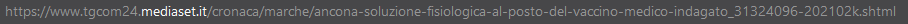

Quando si naviga sul web, ci si può imbattere frequentemente in Fake News.
Oggi, purtroppo, far circolare Fake News è molto più semplice di quanto possa sembrare.
Queste notizie circolano soprattutto all'interno dei social e sono rese credibili dalle circostanze
realistiche
Di seguito presentiamo alcuni esempi di fake news:
Michael Jackson è ancora vivo
Secondo un video pubblicato nel 2014 dal canale Youtube "BeLIEve", Michael Jackson è ancora vivo ed è fuggito a Los Angeles.
La sua morte misteriosa, purtroppo, è ancora oggi oggetto di discussione
Fonte: YouTube
Le anatre attendono il semaforo verde
Avete visto questo video delle anatre che aspettano il semaforo verde prima di attraversare? È diventato virale, con migliaia di views
su Twitter e più di 2,5 milioni di views su Facebook. Purtorppo, però, il video è totalmente fake, le anatre sono state infatti generate
al computer.
Fonte: Gizmodo

Bambina musulmana di nove anni data in matrimonio e violentata
Questa fake news ha imperversato in tutta Italia e, in particolare
nella città di Padova. Ciò che ha sorpreso è il fatto che
il famoso sito web VOX, noto come creatore di fake news, negasse fortemente la falsità della notizia,
cercando di fornire alcuni elementi e dettagli per supportarne la veridicità
Fonte: VOX
Come abbiamo appena visto, le fake news possono riguardare ogni ambito dell'informazione ma, in particolare, possono condizionare le opinioni e le scelte delle persone: è proprio questo l'obiettivo della divulgazione di notizie infondate.
Allora come possiamo evitare di essere ingannati?
Ecco qua alcune semplici regole da seguire per comprendere
se la notizia che si sta leggendo è una fake news:
La notizia viene da fonti attendibili?
Hai visto la notizia anche su altri siti o testate?
La grafica ha qualcosa che non ti convince?

Osserva le immagini: sono fotomontaggi?

Hai letto tutto l'articolo?

Hai controllato data e ora della pubblicazione?
Hai controllato l'indirizzo web?
La notizia vuole venderti qualcosa?
C'è la spunta blu?
Prima di condividere, verfica.
Fonte: Io non la Bevo - Mediaset
Facciamo una prova!
Analizziamo questa notizia del quotidiano TGcom24 e cerchiamo di capire se è attendibile o meno:
- La notizia è consultabile anche su altri siti web, come:
- La grafica non è sospetta
- Le immagini non sembrano essere fotomontaggi
- Sono riportate la data e l'ora della pubblicazione
- L'indirizzo web della pagina non ha nulla di sospetto 
- La notizia non sembra avere come scopo la vendita di qualsiasi prestazione
Da ciò si può dedurre che la notizia è attendibile.
Fonte: TGcom24
Se volete allenare le vostre capacità da smascheratori di fake news vi consigliamo di installare l'app sviluppata dal progetto Fake off. L'app include due modalità: un quiz e un detective game. Lo scopo del gioco è sensibilizzare sull'argomento delle fake news e imparare a gestirle. L'app si può scaricare su Google Play a questo link e su App Store a questo link.